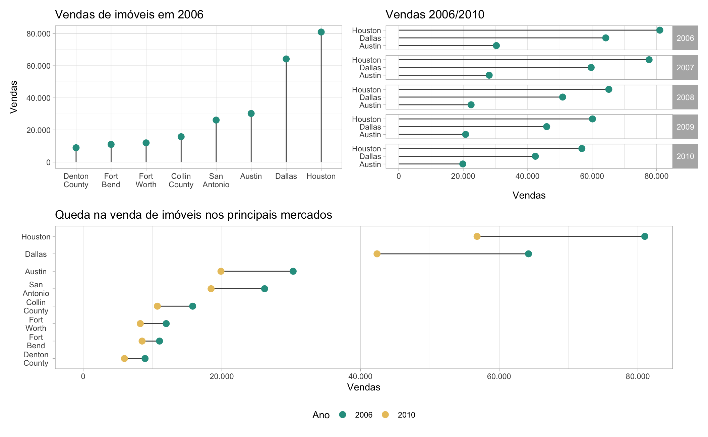
Lollipop charts
Os gráficos de lollipop (pirulito) consistem de barras horizontais (colunas) com círculos no topo, que representam os valores das observações. Visualmente, elas lembram pirulitos. Eles são utilizados tanto para substituir gráficos de coluna convencionais, como para destacar e comparar valores entre diferentes categorias ou momentos no tempo.
R
Antes de inicar é preciso carregar alguns pacotes. Para carregar os pacotes necessários para acompanhar o post execute o código abaixo.
# Instala os pacotes (se necessário)
install.packages(c("ggplot2", "tidyr", "dplyr", "forcats", "gapminder"))
# Carrega os pacotes necessários
library("ggplot2")
library("tidyr")
library("dplyr")
library("forcats")
library("gapminder")Este é o primeiro post da parte intermediária da série de Fundamentos de ggplot2. Para uma introdução aos gráficos de coluna veja o post introdutório. Além disso, alguma manipulação de dados será necessária para remodelar os dados. Não é necessário ter conhecimento sobre estas funções adicionais, mas caso queira aprender mais sobre manipulação/limpeza de dados veja o post Manipular para enxergar: o básico da limpeza de dados.
Exemplo
Primeiro vamos montar uma base de dados simulada. Vamos usar a função tibble para montar uma base de dados usando o código abaixo.
# Monta uma base de dados usando o tibble
dados <- tibble(
categoria = factor(c("A", "B", "C", "D", "E")),
vendas_2020 = c(40, 10, 15, 30, 20),
vendas_2021 = c(55, 50, 30, 35, 30)
)A função factor no código acima indica que a variável categoria deve ser tratada como uma variável categórica. Temos 5 grupos distintos (A, B, C, D e E) na coluna categoria. As colunas vendas_2020 e vendas_2021 representam o total de vendas nos anos de 2020 e 2021, respectivamente. A base de dados tem a seguinte forma.
| categoria | vendas_2020 | vendas_2021 |
|---|---|---|
| A | 40 | 55 |
| B | 10 | 50 |
| C | 15 | 30 |
| D | 30 | 35 |
| E | 20 | 30 |
Para montar um lollipop vamos combinar dois geoms: o geom_segment com o geom_point. A função geom_segment() desenha segmentos de linha e exige quatro argumentos: x, xend, y e yend, que especificam onde a linha começa e onde ela termina. Já a função geom_point() exige apenas os argumentos x e y que especificam a posição dos pontos.
O código abaixo cria um gráfico de lollipop com a base de dados criada anteriormente.
# Monta o gráifco
ggplot(data = dados) +
# Desenha o a linha reta
geom_segment(aes(x = categoria, xend = categoria, y = 0, yend = vendas_2020)) +
# Desenha os pontos
geom_point(aes(x = categoria, y = vendas_2020), size = 3)Vamos destrinchar o código acima em partes.
Primeiro fazemos a chamada do ggplot para começar o gráfico. Incluímos o argumento data = dados pois ambas as figuras vão utilizar a mesma base de dados.
Por força de ser didático, deixamos todos os argumentos explícitos. Assim, a função geom_segment que desenha o segmento de reta precisa de 4 argumentos x, xend, y e yend. Como queremos uma linha reta na vertical, deixamos o valor de x igual ao de xend.
O valor y = 0 especifica que a linha deve iniciar no zero (no eixo-y) e yend = vendas_2020 indica que a linha deve se estender até o valor de vendas_2020.
A função geom_point precisa apenas dos argumentos x e y que definem as coordenadas de cada ponto. Assim x = categoria indica a coordenada horizontal e y = vendas_2020 indica a coordenada vertical. O argumento size = 3 aumenta o tamanho do círculo (opcional, mas recomendado).
O gráfico fica da seguinte forma:
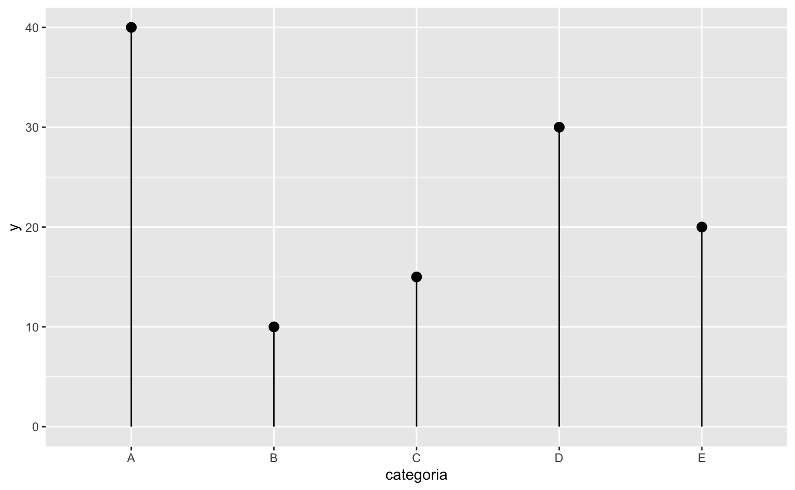
Vale notar que os argumentos x e y são compartilhados entre tanto o geom_segment como o geom_point de tal forma que poderíamos simplificar o código, fazendo uma pequena adaptação nos argumentos y e yend da seguinte maneira:
# Código mais sucinto
ggplot(data = dados, aes(x = categoria, xend = categoria, y = vendas_2020, yend = 0)) +
geom_segment() +
geom_point(size = 3)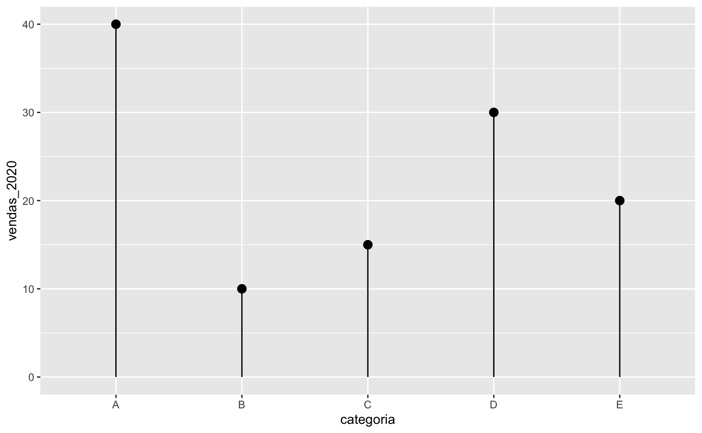
Até aqui, o gráfico de lollipop parece muito similar a um gráfico de colunas, com as desvantagens de ser mais complexo e de exigir mais linhas de código. O exemplo abaixo deixa isto evidente.
# Código para gerar o lollipop chart
ggplot(data = dados, aes(x = categoria, xend = categoria, y = vendas_2020, yend = 0)) +
geom_segment() +
geom_point(size = 3)
# Código para gerar um gráfico de colunas equivalente
ggplot(data = dados, aes(x = categoria, y = vendas_2020)) +
geom_col()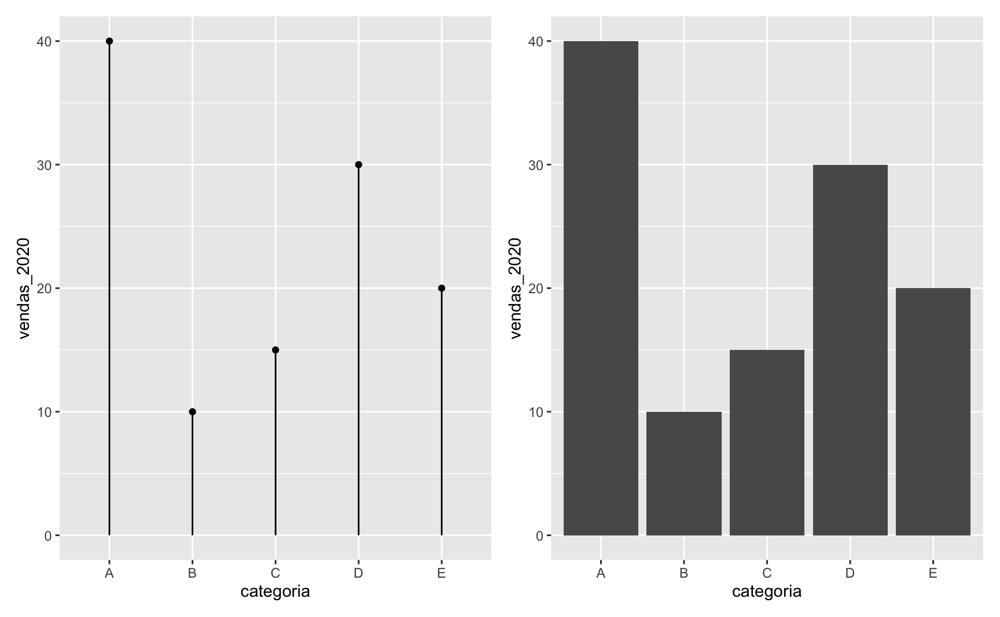
De fato, o gráfico de lollipop pode ser utilizado para mostrar valores, mas uma das suas principais vantanges está em poder comparar valores entre grupos. No nosso caso, temos os valores das vendas de 2020 e 2021 de cinco grupos distinos (A, B, C, D, e E). Podemos montar um gráfico que enfatiza a evolução das vendas em cada um dos grupos.
O código abaixo exemplifica como pode-se fazer um gráfico de lollipop simples deste tipo. Agora fica evidente, por exemplo, que as vendas aumentaram em todos os grupos entre 2020 e 2021. Além disso, o grupo B teve o maior crescimento no volume das vendas.
ggplot(data = dados, aes(x = categoria)) +
# Segmento de reta que liga os pontos
geom_segment(aes(xend = categoria, y = vendas_2020, yend = vendas_2021)) +
# Ponto (verde) que representa as vendas de 2020
geom_point(aes(y = vendas_2020), color = "#2A9D8F", size = 3) +
# Ponto (amarelo) que representa as vendas de 2021
geom_point(aes(y = vendas_2021), color = "#E9C46A", size = 3) Refinando o gráfico
O gráfico acima é bom, mas podemos melhorá-lo modificando alguns parâmetros estéticos. Vamos fazer estas melhorias em três etapas:
- Alterar a cor do segmento de linha
- Ajustar os eixos
- Virar o gráfico e alterar a cor do fundo
Alterar a cor do segmento de linha
Primeiro vamos mudar a cor do segmento de reta com o argumento color dentro de geom_segment(). Vamos escolher um tom mais escuro de cinza.
ggplot(data = dados, aes(x = categoria)) +
geom_segment(
aes(xend = categoria, y = vendas_2020, yend = vendas_2021),
# Ajuste a cor da linha
color = "gray30") +
geom_point(aes(y = vendas_2020), color = "#2A9D8F", size = 3) +
geom_point(aes(y = vendas_2021), color = "#E9C46A", size = 3) 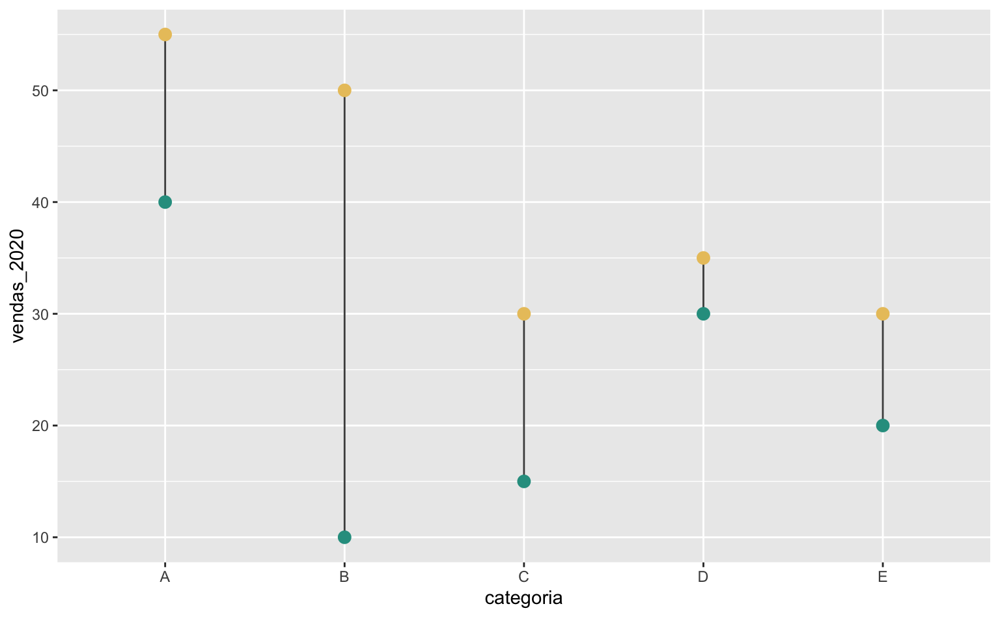
Ajustar os eixos
Depois, vamos ajustar o eixo-y, usando scale_y_continuous(), para iniciar no zero modificando o argumento limits. Este argumento aceita dois valores: o primeiro valor define o limite inferior e o segundo valor define o limite superior. Para deixar qualquer um dos limites “livre” basta defini-lo como NA. Assim limits = c(0, NA) força o eixo a começar no zero e deixa o limite superior “livre” (i.e. definido automaticamente).
Já o argumento breaks define quais os números que devem ser destacados no texto do eixo. Definimos este valor usando breaks = seq(0, 50, 10) que cria uma sequência de 0 a 50, de 10 em 10. Para mais informações consulte ?seq.
O eixo-y foi automaticamente nomeado como “vendas_2020” o que pode causar certa confusão. Além disso o título do eixo-x, “categoria” é um pouco redundante. Modificamos estes nomes utilizando a função labs(). Definimos y = "Vendas (volume)" e x = NULL para omitir o título no eixo-x.
ggplot(data = dados, aes(x = categoria)) +
geom_segment(
aes(xend = categoria, y = vendas_2020, yend = vendas_2021),
color = "gray30") +
geom_point(aes(y = vendas_2020), color = "#2A9D8F", size = 3) +
geom_point(aes(y = vendas_2021), color = "#E9C46A", size = 3) +
# Ajusta o eixo-y
scale_y_continuous(
# Quebras de linha
breaks = seq(0, 50, 10),
# Limites do eixo (NA = livre): força o gráfico a começar no 0
limits = c(0, NA)) +
# Altera nome/título dos eixos
labs(
x = NULL,
y = "Vendas (volume)")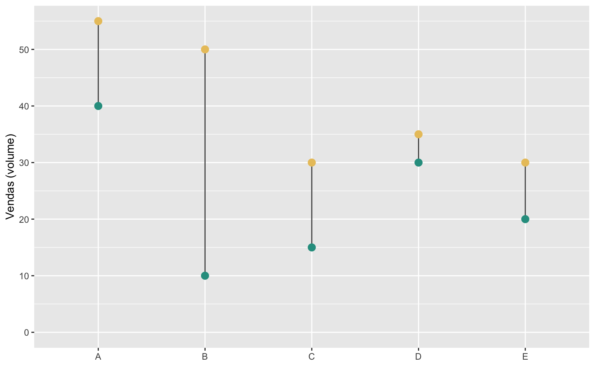
Virar o gráfico e alterar a cor do fundo
Por fim, vamos virar o gráfico de lado usando a função coord_flip() e, em seguida, definir um tema simples com fundo branco usando theme_white(). Para mais opções de temas consulte, por exemplo, o pacote ggthemes.
O código abaixo reúne todas estas melhorias.
ggplot(data = dados, aes(x = categoria)) +
# Segmento de reta que liga os pontos
geom_segment(
aes(xend = categoria, y = vendas_2020, yend = vendas_2021),
# Ajuste a cor da linha
color = "gray30") +
# Ponto (verde) que representa as vendas de 2020
geom_point(aes(y = vendas_2020), color = "#2A9D8F", size = 3) +
# Ponto (amarelo) que representa as vendas de 2021
geom_point(aes(y = vendas_2021), color = "#E9C46A", size = 3) +
# Ajusta o eixo-y
scale_y_continuous(
# Quebras de linha
breaks = seq(0, 50, 10),
# Limites do eixo (NA = livre): força o gráfico a começar no 0
limits = c(0, NA)) +
# Altera nome/título dos eixos
labs(
x = NULL,
y = "Vendas (volume)") +
# Inverte o gráfico (vira ele de lado)
coord_flip() +
# Tema minimalista com fundo branco
theme_light()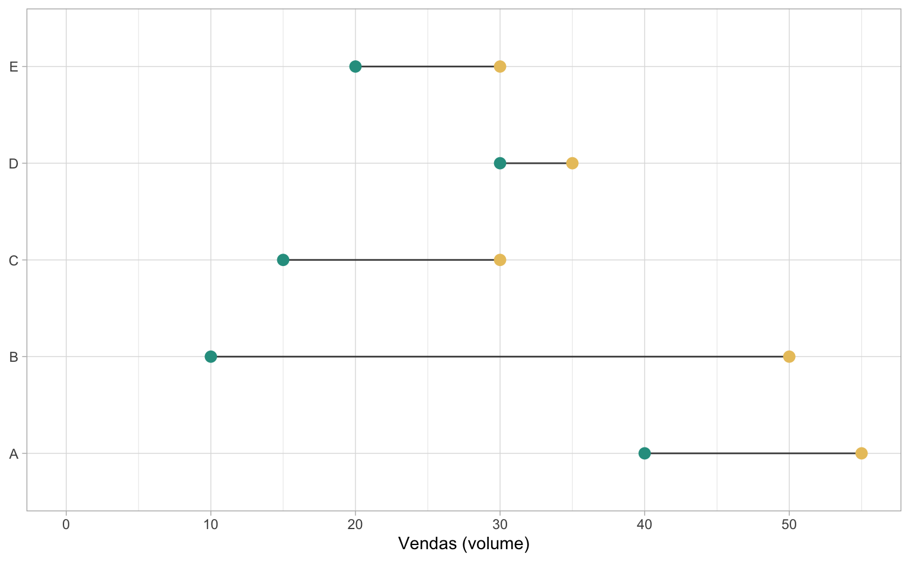
Quem já tem certo domínio do ggplot2 deve ter percebido que falta uma legenda no gráfico acima. De fato, da maneira como nossos dados estão estruturados, não é possível ter uma legenda de cores que explique que os círculos verdes são referentes às vendas de 2020, enquanto os círculos amarelos são referentes às vendas de 2021.
Gerar esta legenda não é tão simples e exigiria, provavelmente, dois tibble: um para representar os pontos e outro para representar a reta que liga os pontos. No código abaixo conseguimos fazer isto numa simples linha de código utilizando a função tidyr::pivot_longer.
Note que agora a chamada inicial do ggplot está vazia e especificamos o argumento data dentro de cada função geom_*. O controle da legenda de cores é feito pela função scale_color_manual().
# Converte a base para o formato longitudinal
tbl_pontos <- tidyr::pivot_longer(dados, vendas_2020:vendas_2021)
ggplot() +
# Define o segmento de reta que liga os pontos
geom_segment(
data = dados,
aes(x = categoria, xend = categoria, y = vendas_2020, yend = vendas_2021)
) +
# Desenha os pontos
geom_point(
data = tbl_pontos,
aes(x = categoria, y = value, color = name),
size = 3
) +
# Controla as cores e a legenda
scale_color_manual(
# Título da legenda
name = "Vendas no Ano",
# Cores dos pontos
values = c("#2A9D8F", "#E9C46A"),
# Texto da legenda
labels = c("2020", "2021")
) +
# Ajusta o texto do eixo-y
scale_y_continuous(
breaks = seq(0, 50, 10),
limits = c(0, NA)) +
# Altera nome/título dos eixos
labs(
x = NULL,
y = "Vendas (volume)") +
# Inverte o gráfico (vira ele de lado)
coord_flip() +
# Tema minimalista com fundo branco
theme_light() +
# Coloca a legenda na parte inferior do gráfico
theme(
legend.position = "bottom"
)
Formato dos dados
Há uma maneira de contornar a necessidade de ter duas bases de dados distintas (uma em formato wide e outra em formato long), substituindo a função geom_segment() pela função geom_line(). A função geom_line() é tipicamente utilizada para desenhar gráficos de séries de tempo, mas também pode ser utilizada para desenhar simples linhas retas.
O código abaixo exemplifica como isto pode ser feito. Note o uso do argumento group = categoria dentro da função geom_line().
Apesar de mais simples nestre caso, a função geom_line() é menos versátil para montar gráficos de lollipop. Não é possível replicar o primeiro gráfico que fizemos, com comportamento similar a um gráfico de colunas, usando esta função, por exemplo.
ggplot(tbl_pontos, aes(x = categoria, y = value)) +
geom_line(aes(group = categoria), color = "gray30") +
geom_point(aes(color = name), size = 3) +
coord_flip()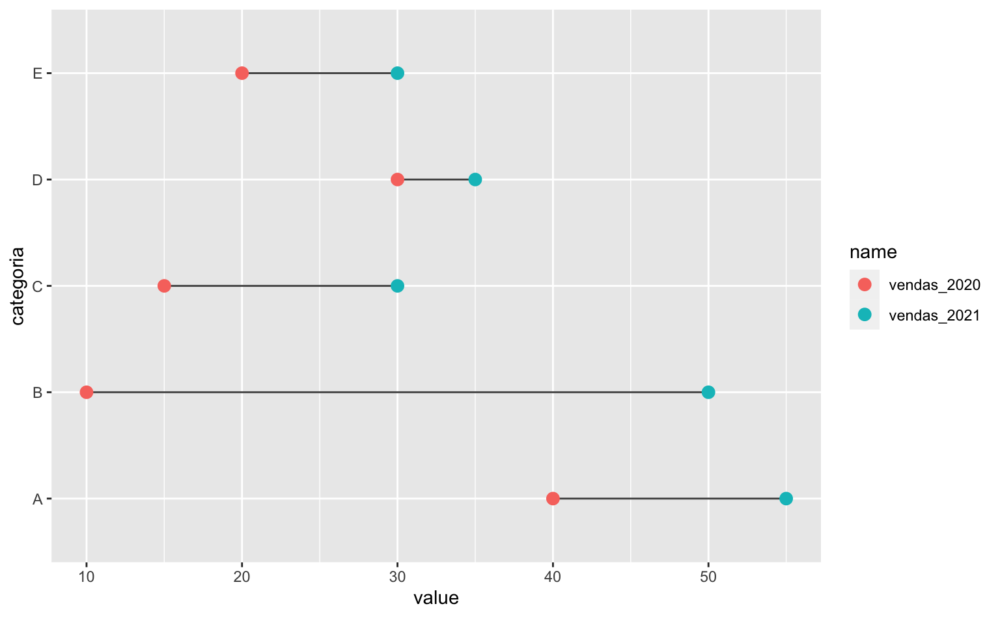
Invertendo a ordem dos elementos
Por fim, um último ponto importante é a ordem da variável categórica. No primeiro gráfico que fizemos a variável categórica foi exposta da esquerda para a direita, como seria mais natural para leitores ocidentais. Contudo, quando usamos a função coord_flip() para virar o gráfico, a variável categórica agora vai de baixo para cima o que acaba sendo confuso.
O exemplo abaixo ilustra o problema: no gráfico da direita a ordem do eixo-y começa no E e termina no A.
# Gráfico na horizontal com a variável categórica da esquerda para a direita
ggplot(
data = dados,
aes(x = categoria, xend = categoria, y = vendas_2020, yend = 0)
) +
geom_segment() +
geom_point(size = 3)
# Gráfico na vertical com a variável categórica de baixo para cima
ggplot(
data = dados,
aes(x = categoria, xend = categoria, y = vendas_2020, yend = 0)
) +
geom_segment() +
geom_point(size = 3) +
coord_flip()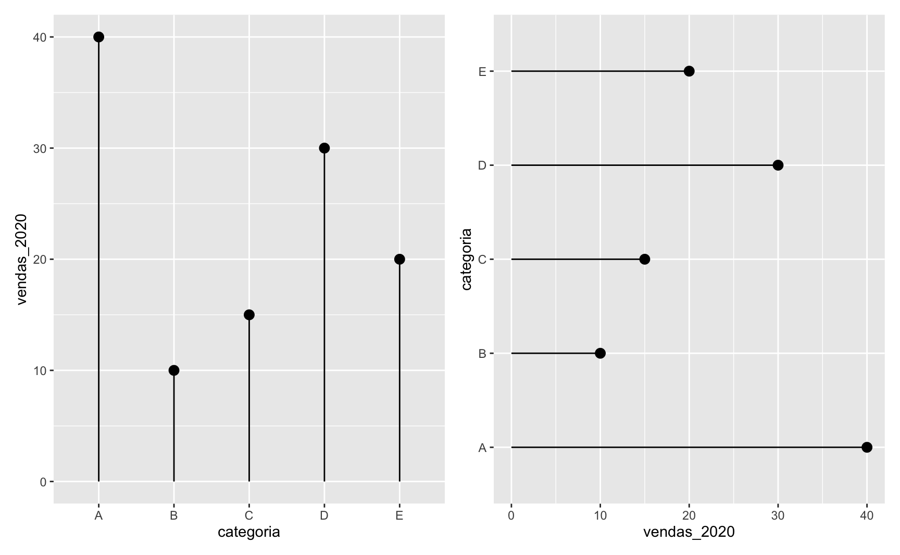
A maneira mais segura e consistente de remediar isto é alterar a base de dados. Especificamente, deve-se interveter a ordem da variável categórica. Há muitas maneiras de fazer isso usando as funções factor() e rev(). Felizmente, o pacote forcats também tem uma função feita justamente para inverter a ordem de uma variável factor. O código abaixo utiliza justamente a função forcats::fct_rev(). Note que agora a ordem da variável categoria está de cima para baixo, de A até E.
dados <- mutate(dados, categoria = forcats::fct_rev(categoria))
# Agora a variável categórica está ordenada de cima para baixo
ggplot(
data = dados,
aes(x = categoria, xend = categoria, y = vendas_2020, yend = 0)
) +
geom_segment() +
geom_point(size = 3) +
coord_flip()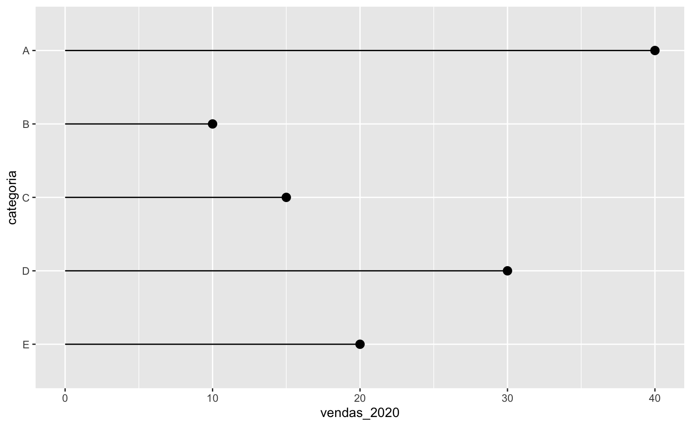
Expectativa de vida
Agora vamos fazer um exemplo aplicado usando dados da base gapminder. A Gapminder é uma fundação de pesquisa independente que compila dados sobre importantes fatos globais. Caso não tenha carregado ainda, use o código abaixo para carregar o pacote necessário.
A tabela que vamos utilizar compila dados de expectativa de vida (lifeExp), população (pop) e de PIB per capita (gdpPercap) ao longo do período 1952-2007 para quase todos os países do mundo. Os dados estão armazenados no tibble chamado gapminder.
data("gapminder")
gapminder| country | continent | year | lifeExp | pop | gdpPercap |
|---|---|---|---|---|---|
| Afghanistan | Asia | 1952 | 29 | 8425333 | 779 |
| Afghanistan | Asia | 1957 | 30 | 9240934 | 821 |
| Afghanistan | Asia | 1962 | 32 | 10267083 | 853 |
| Afghanistan | Asia | 1967 | 34 | 11537966 | 836 |
| Afghanistan | Asia | 1972 | 36 | 13079460 | 740 |
| Afghanistan | Asia | 1977 | 38 | 14880372 | 786 |
Vamos montar um gráfico de lollipop que mostra a evolução da expectativa de vida nos países americanos no maior horizonte de tempo possível. Primeiro, temos de preparar os dados para nossa visualização.
Como os dados já estão no formato longitudinal, vamos utilizar esta base para plotar os pontos do gráfico. O código abaixo usa a função filter para encontrar apenas as linhas referentes a países do continente americano (inclui América do Sul, Central e do Norte) no primeiro e o último ano disponível.
Depois, o código inverte a ordem alfabética dos países usando forcats::fct_rev() dentro da função mutate. Isto é útil pois quando a função coord_flip() “vira” o gráfico, a ordem da variável categórica acaba ficando invertida (como nos gráficos que fizemos acima).
americas <- gapminder |>
filter(
continent == "Americas",
year == min(year) | year == max(year)) |>
mutate(country = forcats::fct_rev(country))Para converter os dados no formato necessário da função geom_segment usamos a função pivot_wider(). Os argumentos podem parecer confusos à primeira vista. Essencialmente, estamos indicando que cada linha deve ser um país, que as colunas devem representar os valores dos anos (1952 e 2007) e que os valores destas colunas estão em lifeExp. Vale consultar ?pivot_wider.
americas_wide <- tidyr::pivot_wider(
americas,
# Cada linha é um país
id_cols = "country",
# As novas colunas devem representar os anos de 1952 e 2007
names_from = "year",
# Os valores destas novas colunas estão na coluna lifeExp
values_from = "lifeExp",
# Concatena o stringr 'life_exp_' no nome das novas colunas
names_prefix = "life_exp_"
)O código completo para o gráfico segue abaixo.
ggplot() +
geom_segment(
data = americas_wide,
aes(x = country, xend = country, y = life_exp_1952, yend = life_exp_2007),
color = "gray30") +
geom_point(
data = americas,
aes(x = country, y = lifeExp, color = as.factor(year)),
size = 2) +
scale_color_brewer(name = "Ano", type = "qual", palette = 6) +
labs(
title = "Aumento da Expectativa de Vida",
subtitle = "Expectativa de vida ao nascer em 1952 e em 2007 nos países americanos.",
caption = "Fonte: Gapminder.",
x = NULL,
y = "Expectativa de vida (Anos)") +
coord_flip() +
theme_light() +
theme(legend.position = "top")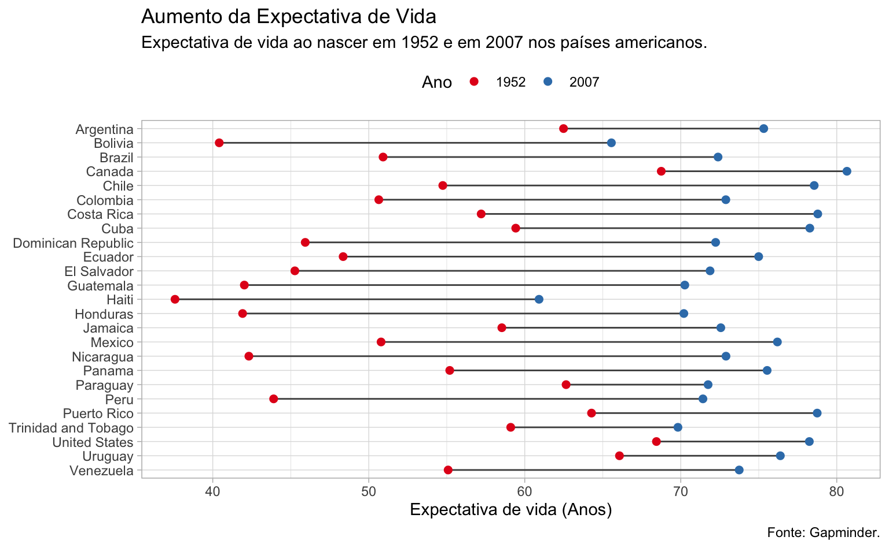
Resumindo
Os gráficos de lollipop são uma forma atraente de comparar valores ou proporções entre diferentes categorias. Eles consistem em um gráfico de barras horizontais com pontos representando os valores plotados no topo, que lembram pirulitos. Há várias maneiras de montar estes gráficos usando ggplot2 mas a mais completa é combinando o geom_segment com o geom_point. Abaixo resumimos alguns dos pontos positivos destes gráficos.
Pontos positivos:
- Visualmente atraente: os gráficos de lollipop são uma forma elegante de exibir seus dados em relatórios e apresentações.
- Comparação de valores entre grupos: permitem facilmente comparar, visualmente, a diferença entre grupos e dentro de um mesmo grupo.
- Ocupam pouco espaço: são visualmente compactos e transmitem um grande quantidade de informação.
Em resumo, os gráficos de lollipop são uma opção atraente e eficiente para comparar valores ou proporções entre categorias, mas podem não ser a melhor opção para comparar dados categóricos ou com muitas categorias.